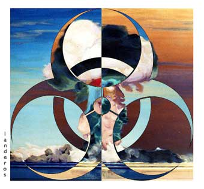

|

Weapons of mass distortion
The concept of WMD is dishonest. When they are in friendly hands we call them defence forces.
- - - - - - - - - -
by Geoffrey Wheatcroft
 F THE FIRST CASUALTY OF WAR IS TRUTH, then language itself sustains the heaviest collateral damage, as Orwell used to point out (before "collateral damage" proved his point by entering the vocabulary of poisonous euphemism). The Iraq war has produced its own rich crop of Newspeak, but the choicest of all is the phrase "weapons of mass destruction". F THE FIRST CASUALTY OF WAR IS TRUTH, then language itself sustains the heaviest collateral damage, as Orwell used to point out (before "collateral damage" proved his point by entering the vocabulary of poisonous euphemism). The Iraq war has produced its own rich crop of Newspeak, but the choicest of all is the phrase "weapons of mass destruction".
Even the most credulous supporters of Tony Blair's war are beginning to see they were sold a pup. MPs angrily demand evidence of the WMDs, which they, in their innocence, believed were the reason for the war, rather than its flimsy pretext, while the prime minister insists that WMDs will be found.
But what are they anyway? The very phrase "weapons of mass destruction" is of recent coinage, and a specious one. It replaced "ABC weapons", for atomic, biological and chemical, which was neater, although already misleading as it conflated types of weaponry quite different in kind and in destructive capacity. WMD is even more empty and dishonest as a concept.
By definition atomic and hydrogen bombs cause mass destruction. Ever since they were first built and used in war (by the US, in case anyone has forgotten), they have cast a peculiar thrall of horror, although this is not entirely logical. The quarter-million dead of Hiroshima and Nagasaki had been preceded by nearly a million German and Japanese civilians killed by "conventional" bombing, whose conventionality was small consolation for the victims.
Even supposing that nuclear weapons are uniquely horrible, the Iraq war and its aftermath have only served to confirm what Hans Blix learned, and what the International Institute for Strategic Studies said last summer: that Saddam had no fissile material to build atomic warheads. Nor did he have (for all the shockingly mendacious propaganda) the wherewithal for acquiring such material. Had he possessed warheads, he never had the means of striking London, let alone New York. And if he had ever been tempted to lob one at Israel, he would have been constrained by the certain knowledge that Baghdad would have been nuked minutes later.
Certainly he possessed the biological and chemical material in ABC, although here again the "W" in WMD is notably misleading: "weaponised" was just what this material was not, a fact which makes the pretext for war even more phoney. And certainly Saddam had used biological and chemical weapons against Iran as well as the Kurds. Very nasty they are, but that does not make them mass-destructive in the same sense as nuclear warheads.
A height of absurdity was reached with the claim that one of Saddam's WMDs was mustard gas - a weapon we were using in 1917, and which British politicians at the time defended as comparatively humane beside high-explosive artillery and machine-gun fire.
Even terrorism isn't always more dangerous because of access to toxic substances, and doesn't need a dictator like Saddam to provide them anyway. Robert Harris and Jeremy Paxman have written about biological and chemical weapons in their book, A Higher Form of Killing. Harris has pointed out that "a reasonably competent chemist could produce nerve agent on a kitchen table".
In 1995, a terrorist religious cult in Japan did just that, thereby providing an illuminating comparison. Those cultists released sarin nerve gas - another of Saddam's alleged WMDs - into the Tokyo metro during rush hour. Last February in the South Korean city of Daegu, an underground train was attacked, with a milk carton containing inflammable liquid. Twelve people died in the "WMD" attack; old-fashioned arson killed 120.
Soon after September 11, a number of letters containing anthrax spores were posted in America. In the overwrought climate of the moment, it was claimed that this batch of "WMD" could kill the American population many times over, and that may have been true according to some abstract calculation. In the event, five people died.
While terrorism is murderous, it mostly remains technologically primitive. Three people were killed in Tel Aviv on Tuesday by a suicide bomber's belt of explosive and metal scraps, and the IRA have shown how bloodthirsty "spectaculars" can be mounted with nothing more than fertiliser, sugar, and condoms for the timers.
As for the greatest spectacular of all, Blair has repeatedly linked September 11 with the threat of WMDs. But the 3,000 victims in New York weren't killed by WMDs of any kind, they were murdered by a dozen fanatics armed with box cutters. Although it has been irritating subsequently to have the contents of one's sponge bag confiscated at the airport in the name of security, that scarcely makes a pair of nail scissors a WMD.
The truth is that "weapons of mass destruction" is a concept defined by the person using it. "I like a drink, you are a drunk, he is an alcoholic," runs the old conjugation. Now there's another: "We have defence forces, you have dangerous arms, he has weapons of mass destruction." As usual, it depends who you are.
Copyright 2003 The Guardian Unlimited.
Reprinted from The Guardian Unlimited

|